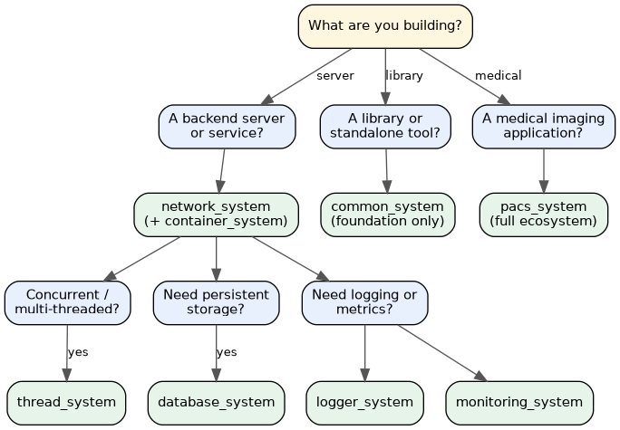
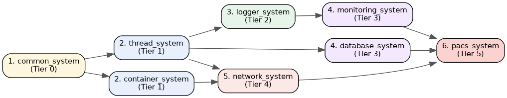

- Generated by
 1.12.0
1.12.0
|
Common System 0.2.0
Common interfaces and patterns for system integration
|
The kcenon ecosystem is a set of eight loosely-coupled C++20 libraries that share a common foundation. Each system addresses a specific layer of a backend application — from low-level concurrency primitives to medical imaging integration. This guide helps you choose the right system(s) for your use case.
| Tier | System | Role | Repository |
|---|---|---|---|
| 0 | common_system | Foundation: Result<T>, interfaces, DI, patterns | https://github.com/kcenon/common_system |
| 1 | thread_system | Thread pools, executors, async primitives | https://github.com/kcenon/thread_system |
| 1 | container_system | High-performance data containers and serialization | https://github.com/kcenon/container_system |
| 2 | logger_system | Structured asynchronous logging | https://github.com/kcenon/logger_system |
| 3 | monitoring_system | Metrics, health checks, observability | https://github.com/kcenon/monitoring_system |
| 3 | database_system | Async database abstractions and connection pooling | https://github.com/kcenon/database_system |
| 4 | network_system | TCP/TLS server framework with async I/O | https://github.com/kcenon/network_system |
| 5 | pacs_system | DICOM/PACS medical imaging integration | https://github.com/kcenon/pacs_system |
Higher tiers depend on lower tiers, but never the reverse. You can adopt a single system in isolation or combine several — every system uses common_system's Result<T> and interface contracts so they compose without glue code.
Use this tree as a starting point. Most production applications combine three or four systems.

If you prefer a checklist over a tree, the table below maps common requirements to the system that solves them.
| Need | Primary System | Companion Systems |
|---|---|---|
| Type-safe error handling without exceptions | common_system (Result<T>) | — |
| Dependency injection container | common_system (service_container) | — |
| Circuit breaker / resilience patterns | common_system (circuit_breaker) | — |
| Thread pool / task executor | thread_system | common_system |
| Async logging with structured output | logger_system | common_system, thread_system |
| Application metrics and health checks | monitoring_system | common_system, logger_system |
| SQL database access (async) | database_system | common_system, thread_system |
| TCP/TLS server with async I/O | network_system | common_system, thread_system |
| Binary serialization / RPC payloads | container_system | common_system |
| DICOM / PACS medical imaging | pacs_system | All of the above |
When integrating multiple systems into a new project, adopt them in dependency order to avoid circular setup. The diagram below shows the recommended bottom-up sequence.

These are the smallest viable system combinations for common project archetypes.
| Project Type | Required Systems | Notes |
|---|---|---|
| Header-only utility library | common_system | Pure foundation; no runtime dependencies |
| Concurrent CLI tool | common_system + thread_system | Add logger_system for diagnostics |
| Microservice (HTTP/TCP) | common_system + thread_system + network_system | Add logger_system + monitoring_system in production |
| Database-backed worker | common_system + thread_system + database_system | Add logger_system for query tracing |
| Observability stack | common_system + thread_system + logger_system + monitoring_system | Self-contained metrics pipeline |
| PACS / DICOM gateway | All eight systems | pacs_system pulls in the full stack |
| Don't Use | Because |
|---|---|
| thread_system for trivial single-threaded code | Adds dependencies for no benefit; use std::async or skip |
| logger_system for command-line tools that print to stdout | std::cout is sufficient; logger_system is for long-running services |
| monitoring_system for CLI utilities | Designed for daemons and services, not short-lived processes |
| database_system to wrap an existing ORM | It's an abstraction layer, not a replacement for a query builder |
| pacs_system if you don't process DICOM | It's a vertical solution for medical imaging only |
Each system's documentation portal includes a "Related Systems" table at the bottom that links back to every other system in the ecosystem. The repository URLs in those tables are the authoritative entry points — start from any system you're already familiar with and follow the links to discover the rest.